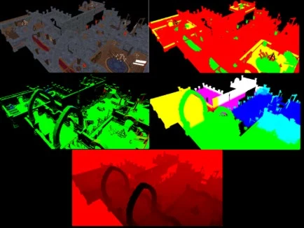
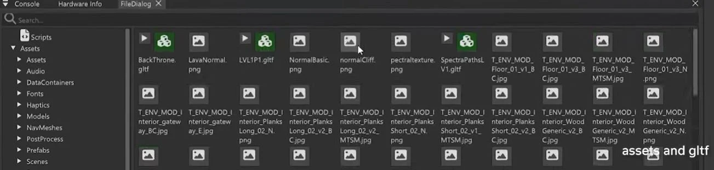
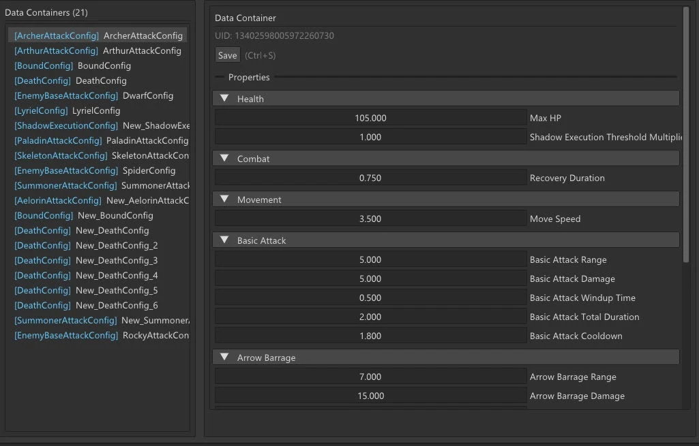
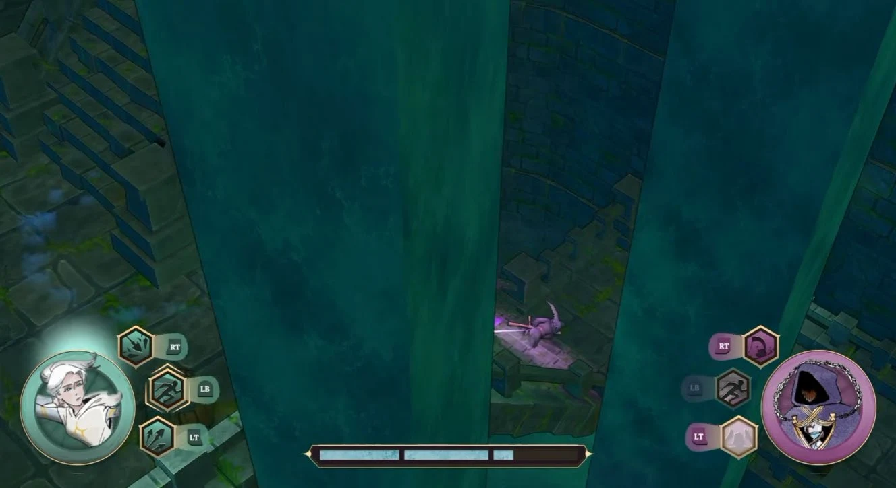
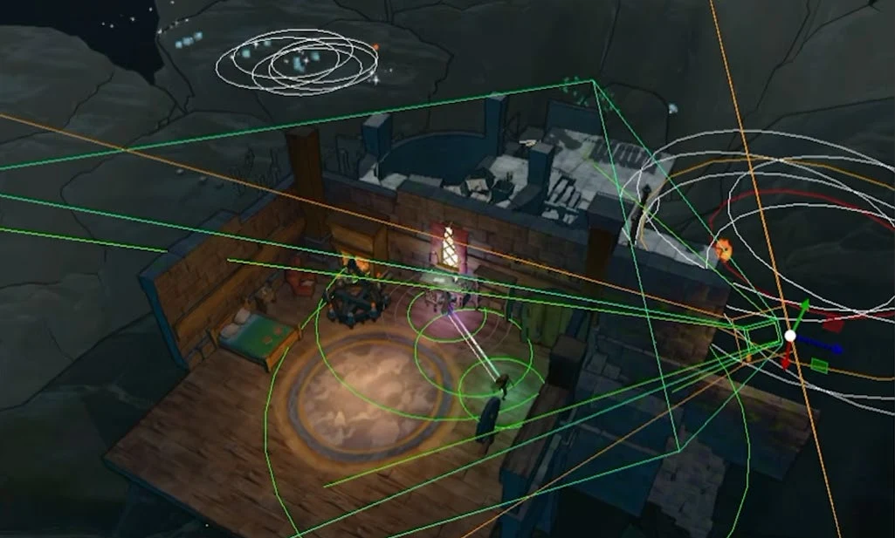
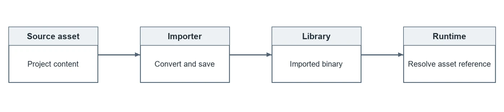
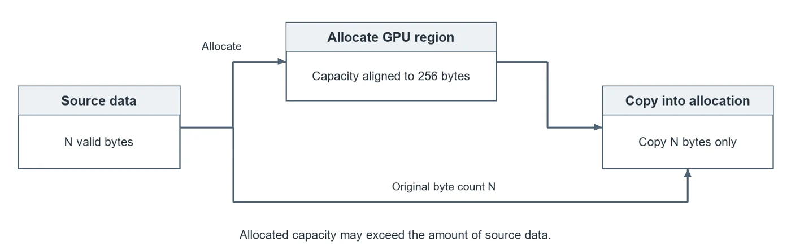
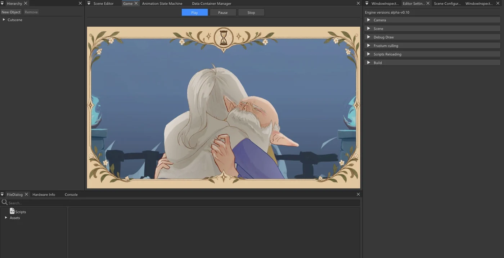

Rendering · collaboration
Deferred geometry pass
Created GeometryPass and its vertex and pixel shaders to populate the G-buffer. Fran and Raul completed the remaining deferred pipeline.
PROJECT BREAKDOWN
My work on rendering, asset workflows and editor tools for our custom C++ / DirectX 12 engine.
MY CONTRIBUTIONS
Selected work · click any image to enlarge

Rendering · collaboration
Created GeometryPass and its vertex and pixel shaders to populate the G-buffer. Fran and Raul completed the remaining deferred pipeline.

Engine systems
Developed the filesystem and import workflow, including glTF mesh/material subassets, asset references, reimport resolution and texture settings. Collaborated with Hector on the pipeline.

Editor tooling
Introduced reusable configuration assets and their editor, then connected them to Bound, character and enemy settings for gameplay tuning.

Rendering
Added directional texture scrolling and two-phase flow-map water, with normal-map fallbacks and controls for flow and texture strength.

Collaboration · Javi & David
Co-developed the first quadtree visibility workflow and integrated it with the camera, organizing objects by their world-space bounding boxes.

Asset pipeline
Migrated prefabs, navmeshes and sound banks to asset references and Library-backed loading. Connected packaged content through build.cfg and fixed prefab instantiation.

Rendering systems
Fixed wraparound and aligned-copy over-reads with David. Also worked on descriptors, deferred resource release and rendering memory leaks.

Engine systems
Added VideoAsset support and corrected decoder issues supporting cinematic playback and the game’s opening sequence.
Additional engine work: common JSON and binary serialization across components, scenes and assets; rendering-pass organization, skybox and RenderSurface integration; asset-browser drag and drop and multiple-window interactions.